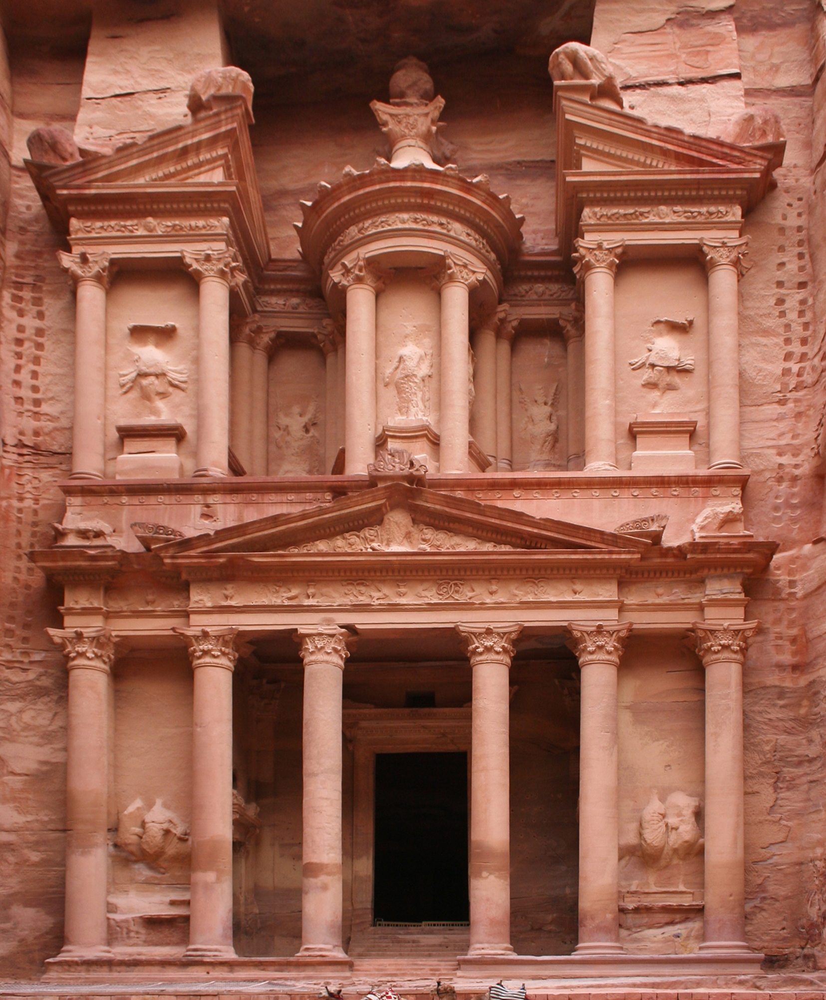

Petra (Arabic: ٱلْبَتْراء, romanized: Al-Batraʾ; Greek: Î ÎÏ„Ïα, "Rock") , originally known to its inhabitants as Raqmu or Raqēmō[3][4] (Nab ataean: ğ¢›ğ¢šğ¢’†or ğ¢›ğ¢šğ¢“ğ¢ˆâ€, *Raqēmō), is a historic and archaeologic al city in southern Jordan. Famous for its rock-cut architecture and wate r conduit system, Petra is also called the "Rose City" because of the colo ur of the stone from which it is carved
